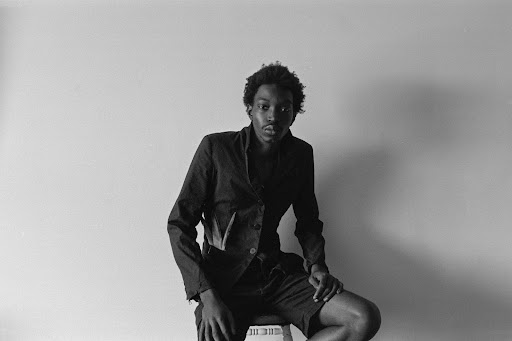
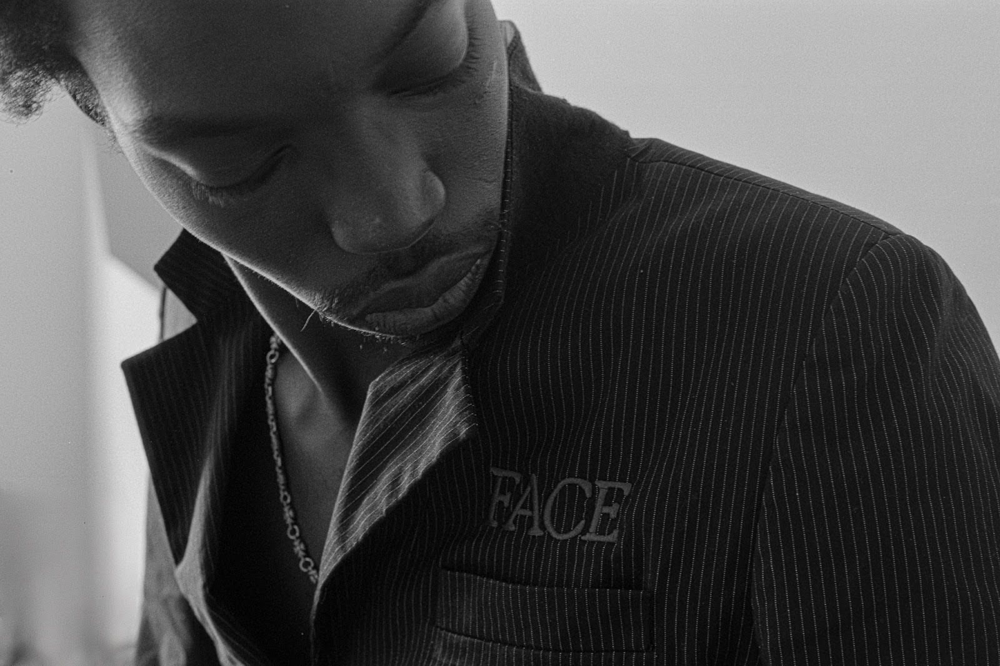
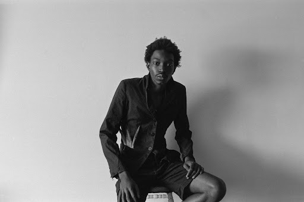
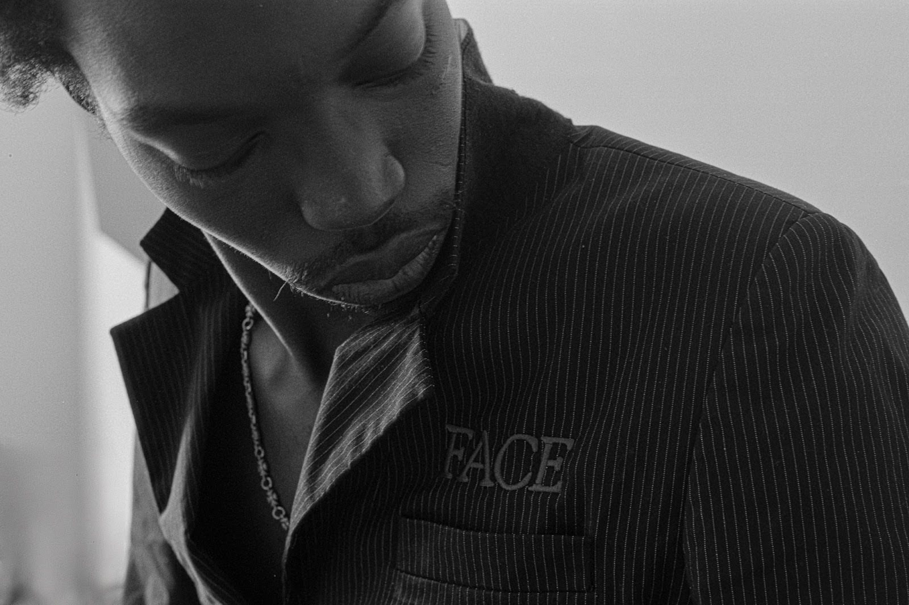

As We Flock with Vice and Stronghold — January 23rd, 2025

Sequence


 



Concept & Direction
This series is a visual meditation on brotherhood, loyalty, and the complicated love that sometimes wears the face of violence. Inspired by friends whose care runs so deep it turns protective — even confrontational — these photographs honor the fierce tenderness I’ve witnessed firsthand. Shot on 35mm film, As We Flock with Vice and Stronghold uses the imagery of guns and feathers to explore the paradox of compassion expressed through force. The gun becomes a symbol not of attack, but of defense. The feathers, fired instead of bullets, speak to softness, unity, and the instinct to shield. Each image is rooted in real friendship — a kind where affection is expressed through presence, through readiness to stand up for one another. The final portrait shows the model, now a New York runway presence, dressed in a suit designed by our close friend. It is a moment of quiet strength, signaling that dignity and grace can still thrive, even when surrounded by the threat of chaos.
Credits
- Photographer / Direction: Aidan McCollick (8Cigsn4Roses)
- Model: Lamine Seck
- Format: 35mm